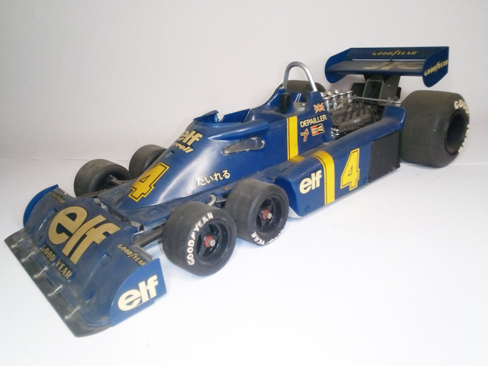

Auto e veicoli stradali · scale model archive
Tyrrell Ford P34 F1 1976
Tyrrell Ford P34 F1 1976 — Kit: Tamiya, Scale: 1/12. Built at a time when F1 car projects sought new ideas, nowadays all F1 cars look the same #1/12…

Photo gallery
English description
Built at a time when F1 car projects sought new ideas, nowadays all F1 cars look the same
#1/12 #Tamiya
Descrizione italiana
Costruito at una time when F1 auto projects sought new ideas, nowadays all F1 autos look il same.